×

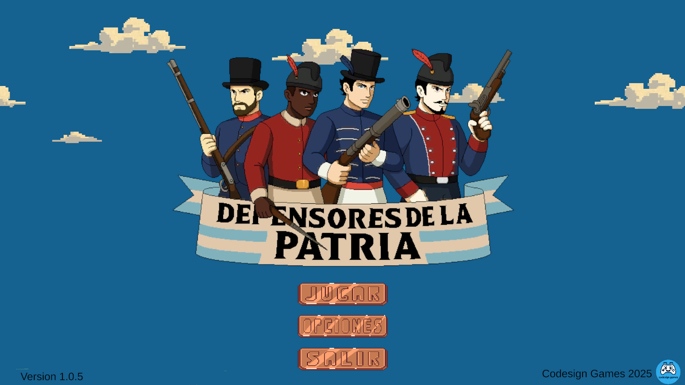
Defensores de la Patria
Un beat ’em up 2D ambientado en las Invasiones Inglesas
Sobre el juego
Durante las Invasiones Inglesas, Buenos Aires fue escenario de una resistencia protagonizada por civiles, milicias y héroes anónimos.
Defensores de la Patria es un videojuego beat ’em up 2D donde el jugador recorre las calles de la ciudad enfrentando tropas invasoras, combinando acción clásica, identidad cultural y una estética inspirada en la época.
 ▶
▶
Características
🎮
Combate beat ’em up clásico y directo
⚔️
Enfrentamientos intensos contra tropas invasoras
🏛️
Escenarios inspirados en Buenos Aires colonial
🎵
Banda sonora de estilo retro
📚
Contenido histórico integrado al gameplay
🧑🤝🧑
Cuatro personajes jugables
Personajes
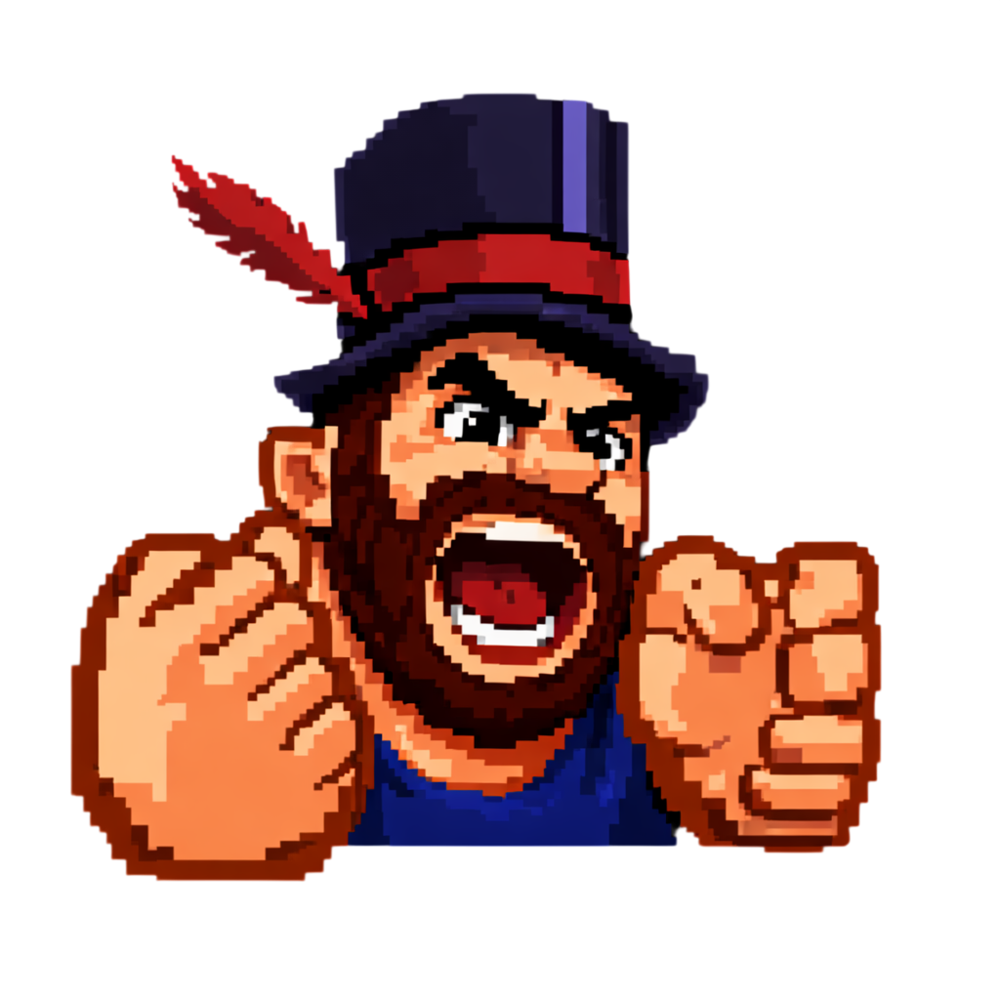
Apolinario
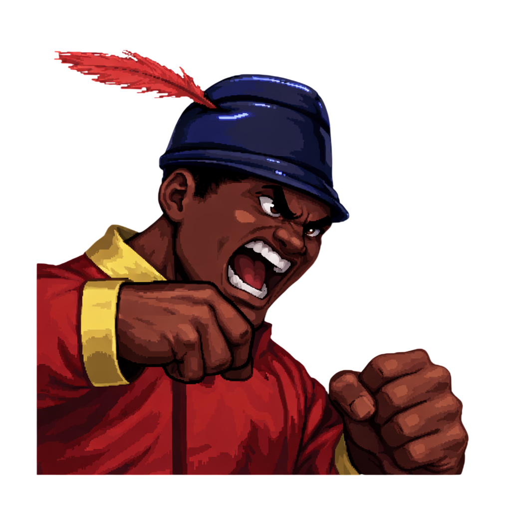
Ciro
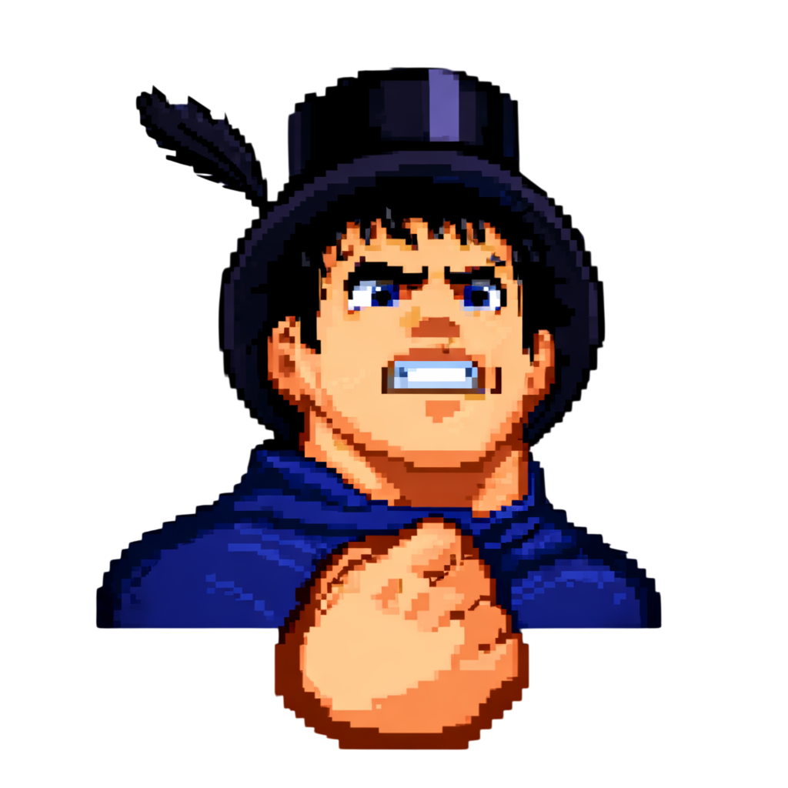
Amancio
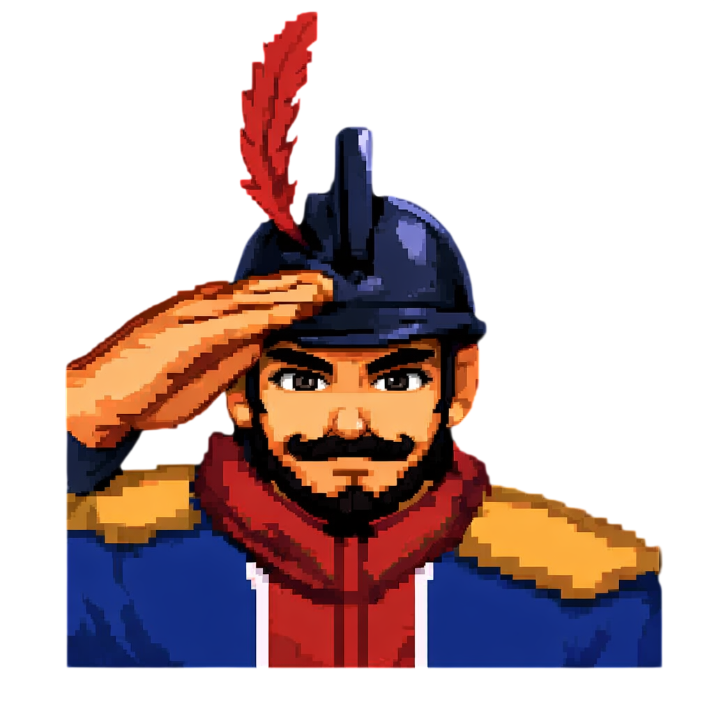
Desiderio
Enemigos
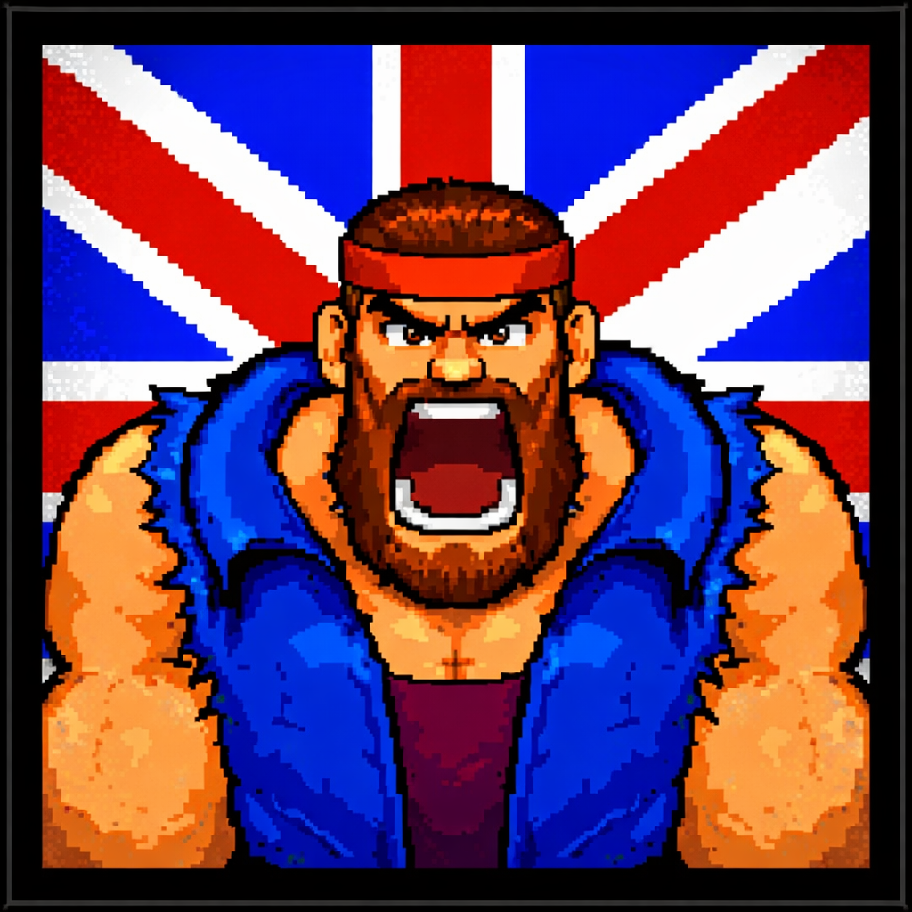
Jefe Pirata
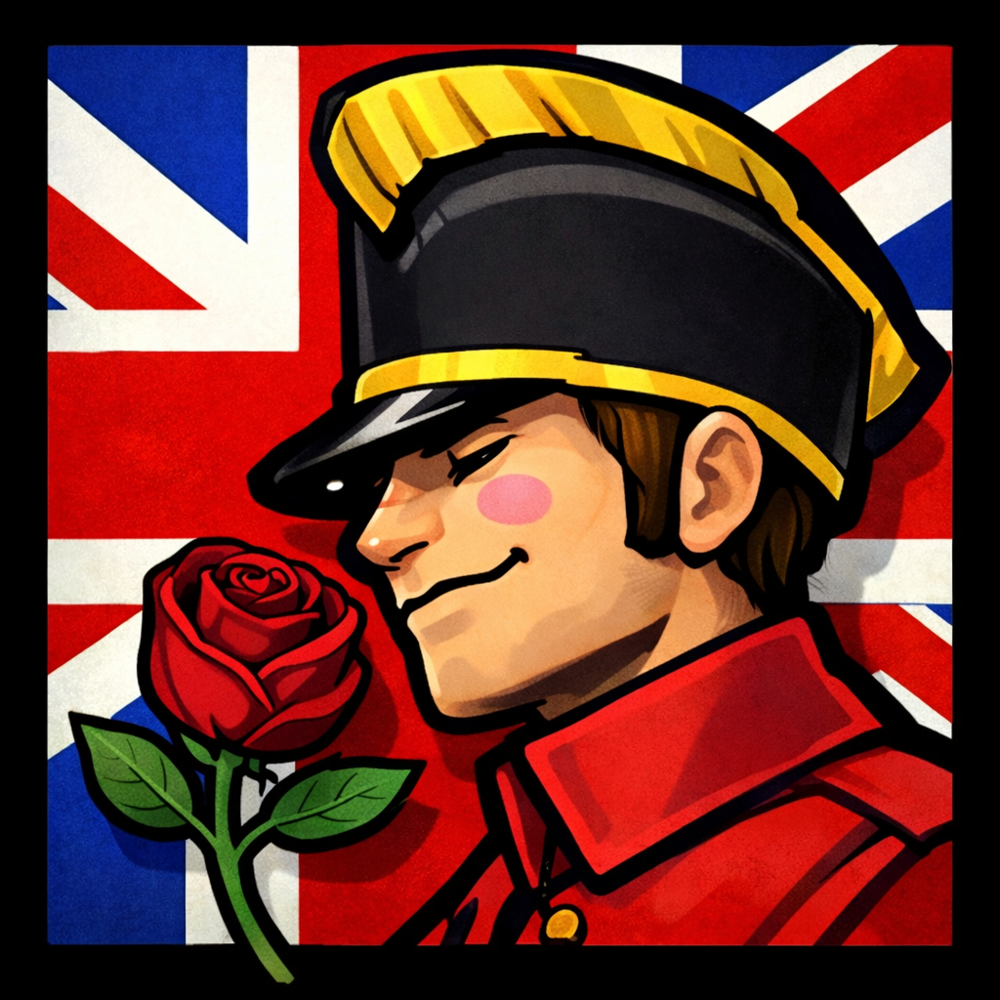
Almirante Inglés
Capturas
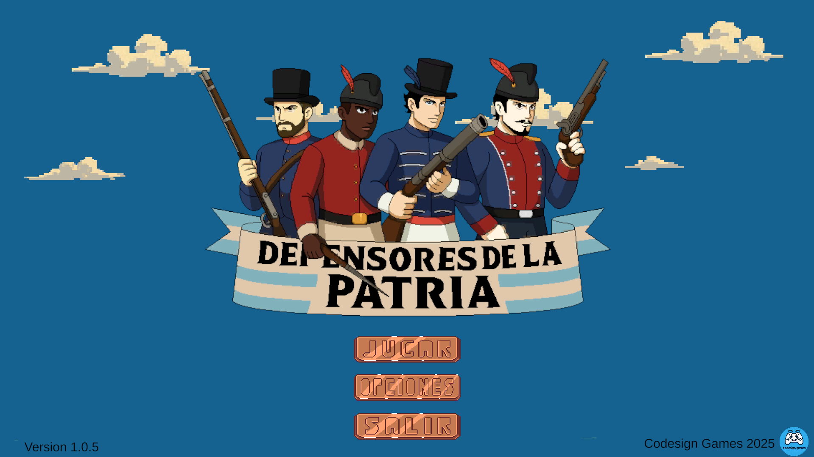
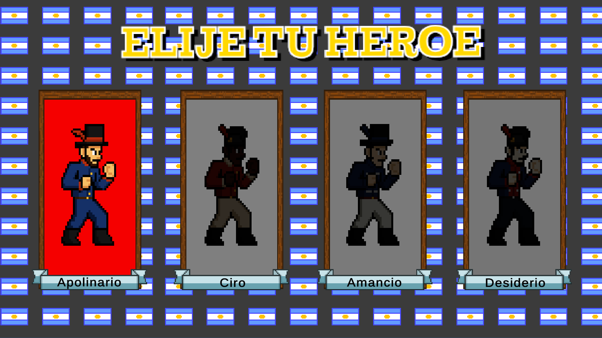
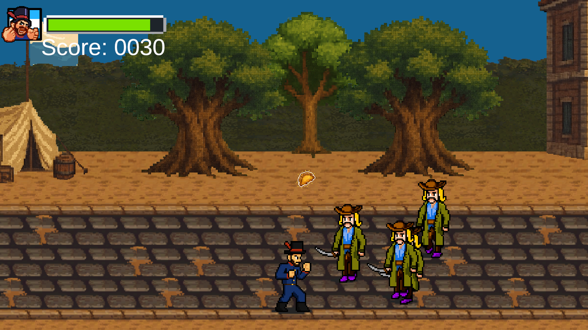
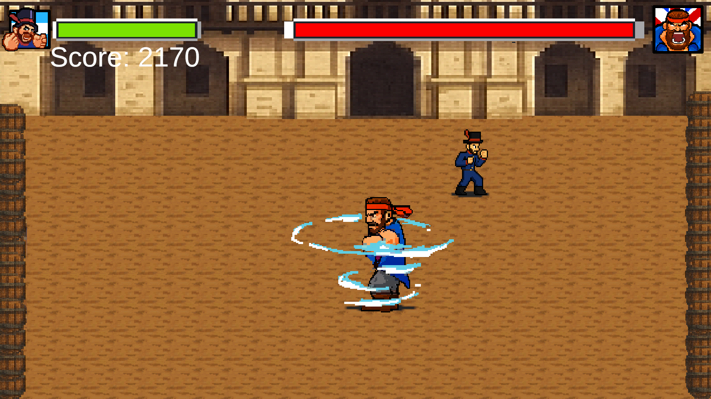
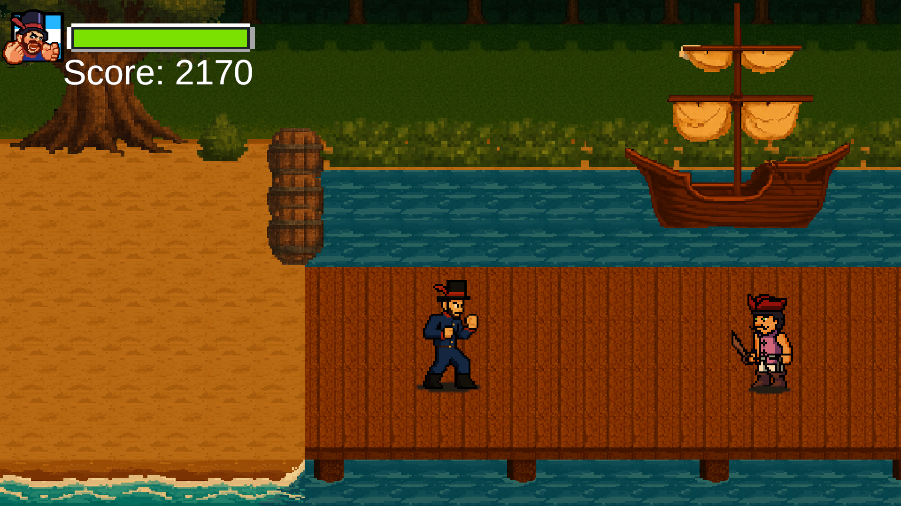
Estado del proyecto
🛠️ Publicado — actualizaciones futuras
×